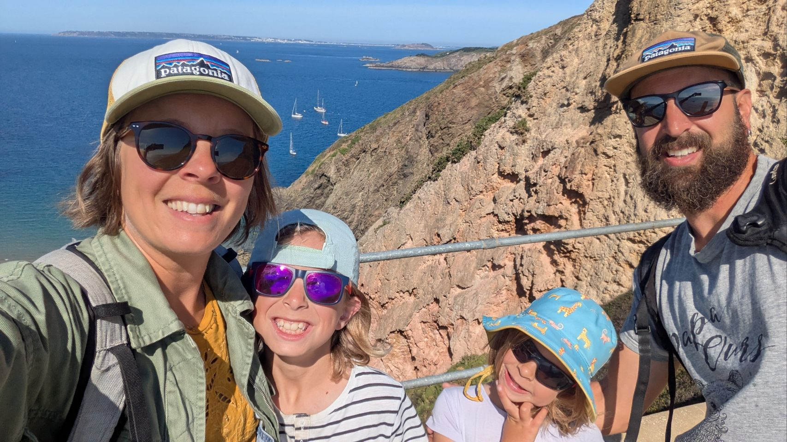
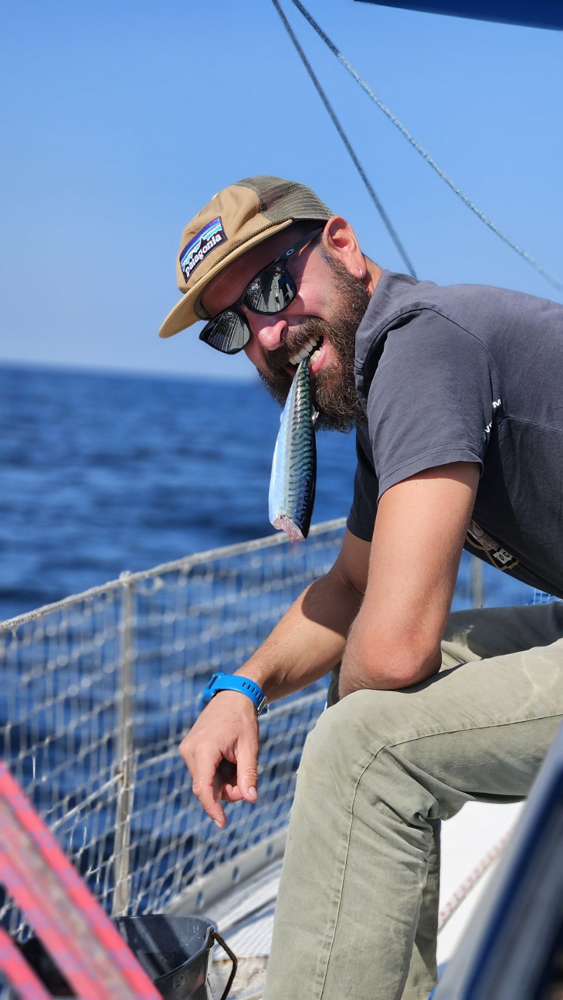
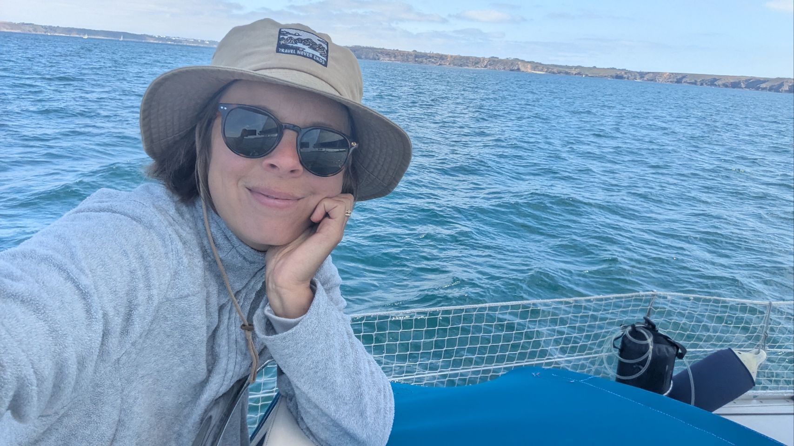

À bord, chacun a sa place — même si les rôles s'échangent selon l'humeur et la météo. Thomas gère la navigation, Morgane s'occupe de l'école des enfants et de l'approvisionnement, et Gaston comme Rose participent aux manœuvres et à la vie quotidienne à leur niveau.


Skipper, chef mécano et spécialiste électronique du bord : c'est Thomas qui gère la navigation avant, pendant et après chaque étape. Docteur en chimie organique reconverti ingénieur développeur logiciel, il a mis sa rigueur scientifique et son goût du bricolage au service du refit complet d'Azurite.
Surfeur passionné, c'est aussi lui qui rêve des vagues mythiques d'Écosse depuis le début du projet. Une anecdote, pour ceux qui doutent encore de son sang-froid : il s'est déjà baigné en pleine navigation... et a perdu son calçon quand le bateau a dépassé les 5 nœuds.

Morgane vient en soutien sur les manœuvres, les quarts, et participe à l'étude et à la validation des itinéraires. Mais avant tout, elle est là pour partager le plaisir d'être en mer avec son mari et ses enfants.
À bord, elle gère aussi la vie quotidienne : repas, logistique, activités pour les enfants, et la continuité pédagogique pendant les sept mois de voyage. Ce qu'elle aime dans ce petit cocon flottant : se recentrer sur la famille, une charge mentale bien plus légère qu'à terre, et passer du temps dehors à lire ou observer la mer — en particulier guetter les dauphins, ses compagnons préférés.
Le reste de l'année, Morgane travaille à l'accueil de la mairie du village — un métier qu'elle aime, varié et au contact du public, mais parfois éprouvant. Partir en mer est son exutoire, et elle attend ce voyage avec impatience : de quoi resserrer encore les liens familiaux, même si quelques frictions sont sûrement à prévoir à quatre dans un espace aussi restreint.

Dorade, maquereau, vieille, bonite, bar... rien ne lui résiste. Gaston fournit assez de poisson pour que la famille n'ait pas besoin d'en acheter. Curieux et observateur, il participe aux manœuvres et à la vie à bord à sa mesure — et on l'a déjà vu à la manœuvre en pleine mer, bien concentré.

Rose n'a pas froid aux yeux ni au corps : elle passerait des heures dans l'eau à se baigner et jouer. Elle participe aussi aux manœuvres, et adore particulièrement tenir la barre. Studieuse, elle est toujours la première à s'installer pour les devoirs et l'école à bord. Et si quelque chose ne lui convient pas, elle sait très bien se faire entendre.
Thomas gère la navigation, Morgane s'occupe de l'école des enfants et de l'approvisionnement, et Gaston comme Rose participent aux manœuvres et à la vie quotidienne à leur niveau. Mais les rôles ne sont pas figés : ils s'échangent selon l'humeur de chacun et les conditions météo.